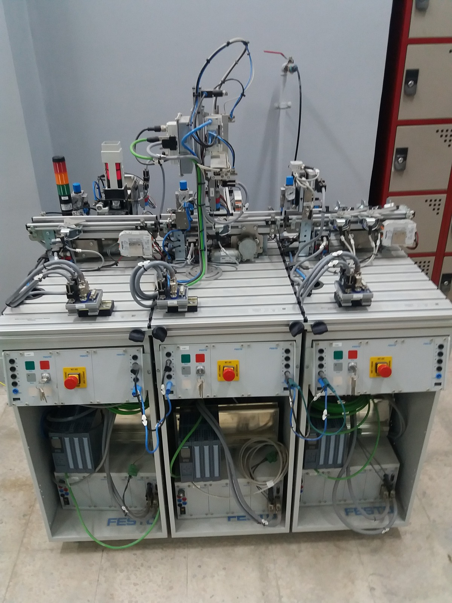
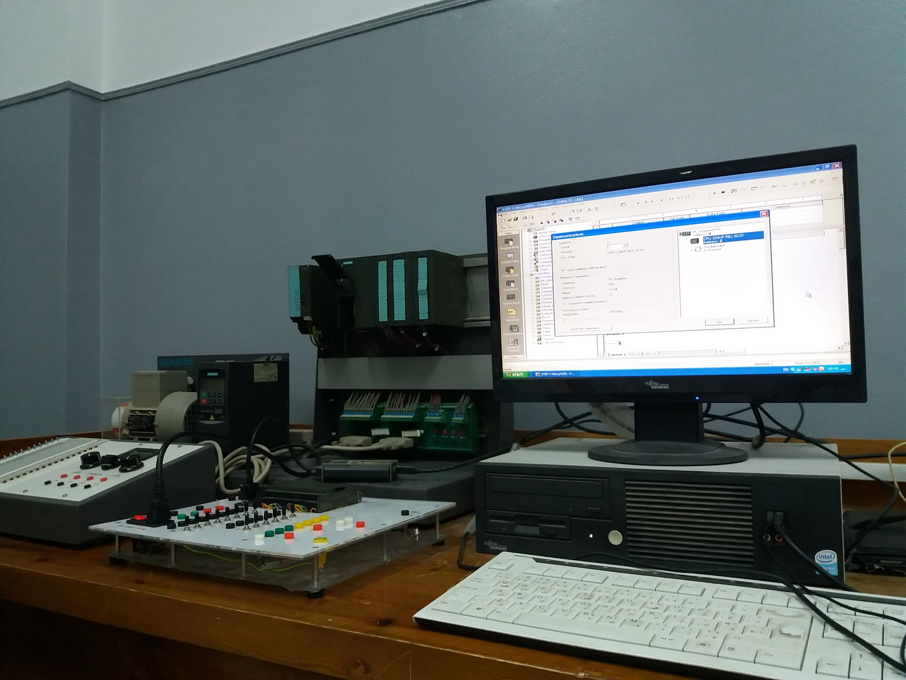
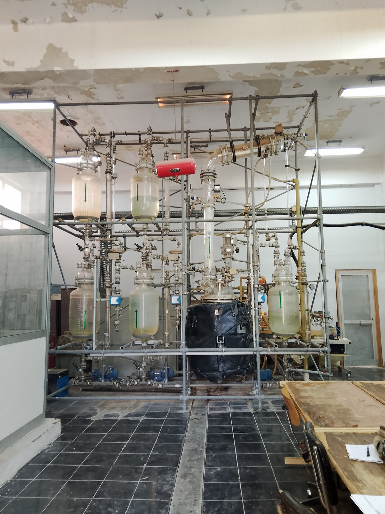

Training center and workshop: FESTO MPS rig, Siemens S7-300 bench, pilot-scale distillation plant.
About
Mechatronics engineer in Alexandria, Egypt, trained on the German dual-system model.
| Location | Alexandria, Egypt (Cairo second base) |
| Languages | Arabic native, English C2, German A1 |
| Education | Vocational Diploma in Mechatronics, TCC Cairo, 2025 |
| Status | Available for projects |
| mazenibrahim.ma@gmail.com | |
| Phone | +20 150 865 7041 |
| linkedin.com/in/mazen-ahmed-mechatronics |
What I'm looking for: junior mechatronics or hardware engineering roles in Egypt, and Ausbildung or entry-level positions in Germany.
Projects
Four-servo walking robot on an ESP8266 with custom C++ gait logic and a 3D-printed chassis. Adapted and modified from an existing open project, with AI assistance.
A second USB keyboard isolated by hardware ID through the Interception driver, scripted with AutoHotkey v2 to run macros (OBS scene switching) and talk over USB serial to an Arduino that switches room lighting relays.
LM358 op-amp circuit designed in EAGLE, etched and hand-soldered as a single-layer PCB, fitted in a snap-fit enclosure modeled and printed to the board dimensions.
Single-sided boards with op-amp comparator circuits (LM339/LM358) and IRF540 MOSFET drivers: schematic capture, routing, toner transfer, FeCl3 etching, drilling and soldering.
Surface EMG muscle sensor modules wired to Arduino/ESP boards, capturing raw biopotential signals and plotting live voltage spikes over serial.
Standalone PySimpleGUI and pandas desktop app built for the training center to record and process student evaluations across the pneumatics, electricity and hydraulics labs.
Mobile-first web app that tracks shifts automatically from a rotating schedule and shows live net earnings with night allowances, KPI bonuses and holiday multipliers. Single-file vanilla HTML/CSS/JS, offline-first, with payslip-based deduction calibration, notifications and JSON/CSV backup. Four versions shipped in one week, in daily personal use.
Project photos


Project 3: etched, soldered and enclosed by hand.
Demo videos
Technical demonstration reel filmed and produced for Micro Ohm Electronics, over 1M views: watch on Facebook.
More demos on request: macro pad working demo, lathe training, hydraulics demonstration and PLC automation runs.
Experience
Technical Team Member and Hardware Diagnostics, Micro Ohm Electronics
Jan 2024 – Apr 2026, Cairo
- Component-level diagnosis and repair of consumer electronics, development boards (Arduino, ESP modules) and sensor kits; PCB soldering and rework.
- Overhauled and calibrated FDM 3D printers: hotends, cooling, heating elements, thermistors; prepared files and delivered finished prints.
- Built Python web scrapers that turn product listings into structured CSV catalogs, and a Google Apps Script pipeline that parses payment confirmation emails into Google Sheets.
- Scripted, filmed and produced technical demonstration videos for product advertising, over 1,000,000 cumulative views.
- Advised customers on components and microcontrollers so they bought the right parts.
Technical skills
- PLC programming: Siemens STEP 7 / SIMATIC Manager (S7-300), LAD, STL and FBD, timer/counter functions, online monitoring and I/O verification.
- Industrial control and power: relay control panels, DIN-rail mounting, contactors and thermal overloads (24V DC / 220V AC), thyristor and power switching circuits.
- Fluid power: electro-pneumatics sequencing on FESTO benches, hydraulics, pilot-scale distillation process rigs, FESTO MPS systems.
- Embedded systems: ESP8266, ESP32, Arduino, PIC; C++ firmware; sensors and actuators from thermocouples to servo and DC motors.
- PCB fabrication: EAGLE 9.6 schematic and layout, chemical etching, through-hole soldering, rework and harness crimping.
- Software: Python (pandas, PySimpleGUI, BeautifulSoup), AutoHotkey v2 with the Interception driver, Google Apps Script pipelines, web scraping to structured CSV catalogs.
- Workshop: oscilloscopes, multimeters, signal generators, lab power supplies, FDM 3D printing, Solid Edge enclosures, Cura/PrusaSlicer slicing, lathe and rotary tools.
Education
2023 – 2025. Two-year diploma modeled on the German dual system via GIZ technical cooperation, 80% hands-on workshop training. Overall 79.6%; practical subjects 89.4%.
Graduated 2023.
Certifications and competitions
- Robotics Programming Level 1 and Level 2 (EV3), Technofuture, 2016.
- FIRST LEGO League Egypt Championship, Smart Village, Giza, Apr 2017.
- Goethe-Institut Kairo choir project "Lasst uns singen!", 2018.